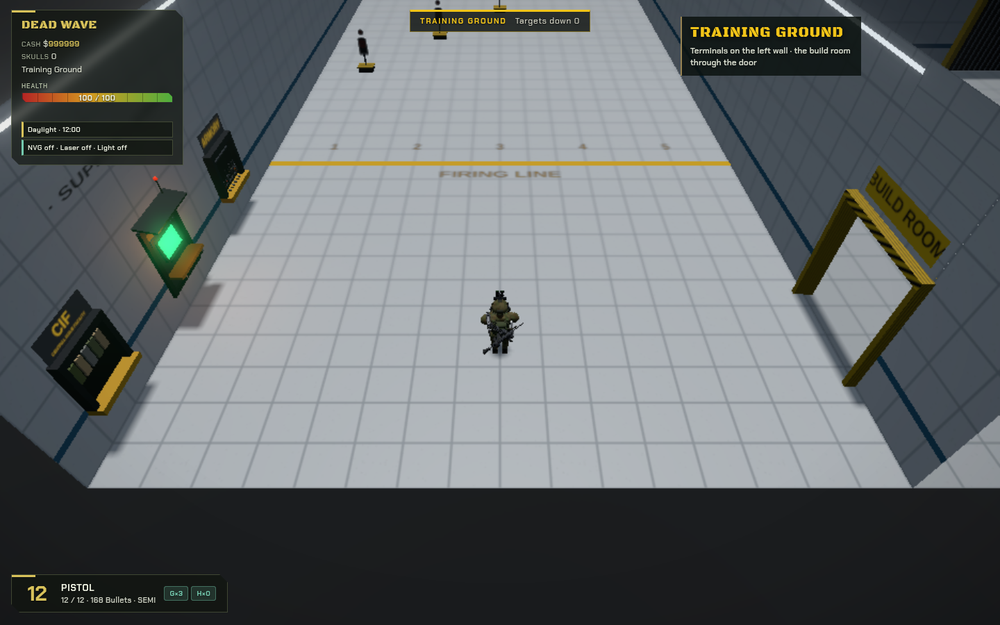
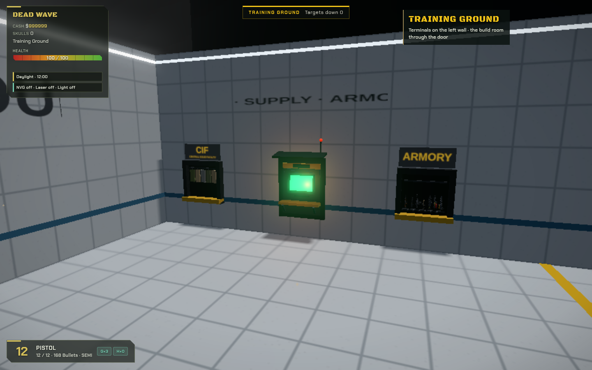
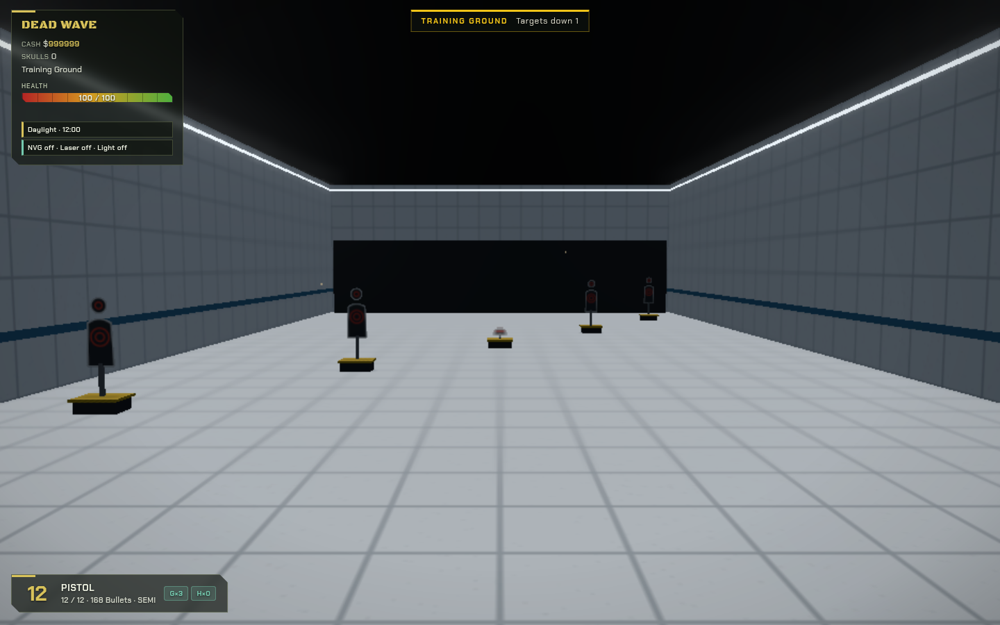
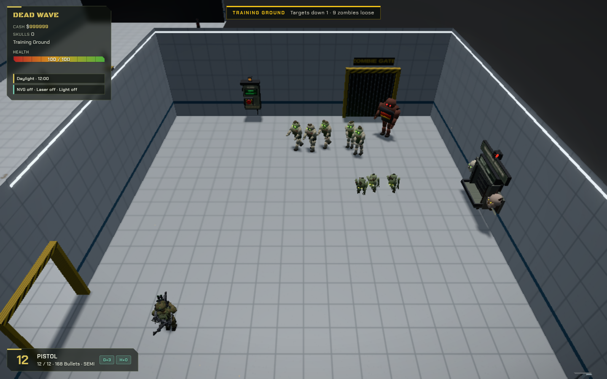
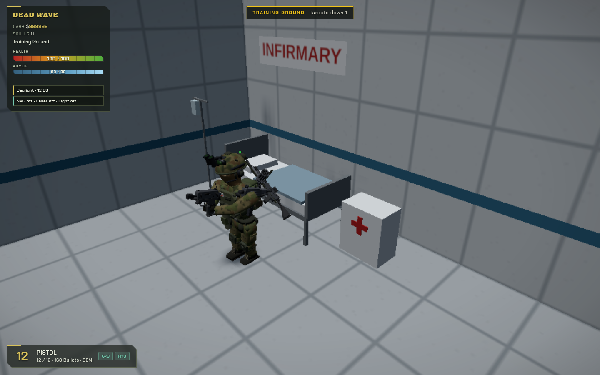
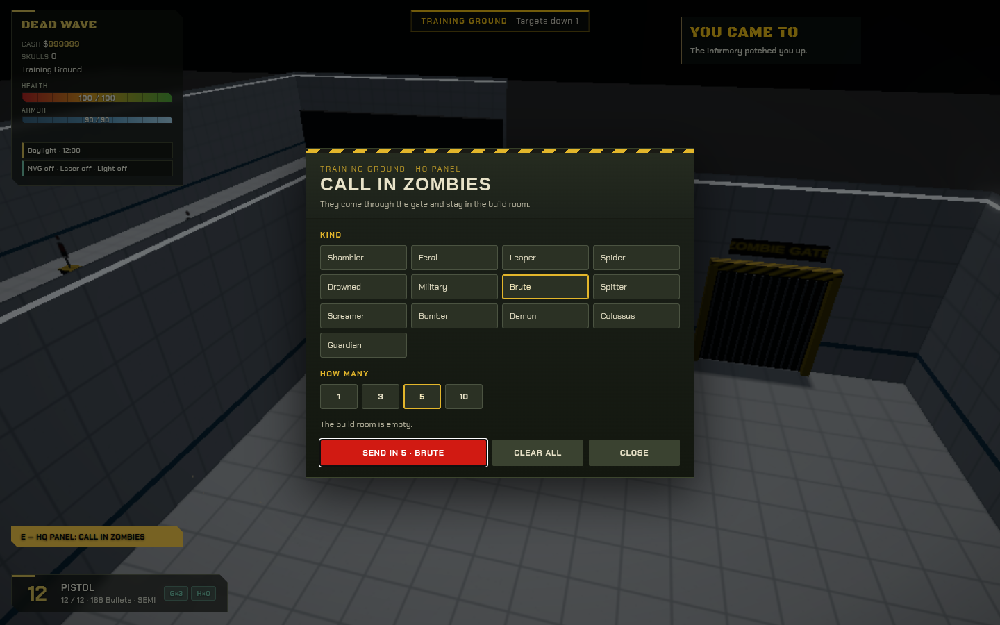

A new button on the title menu, Training Ground, takes you straight in (no parachute). The firing range is white tiles with a yellow firing line and five targets that drop when shot and stand back up. The CIF, the supply terminal and the Armory are on your left as you face the targets. They are copies of the HQ's own, so they change when those do. Through the door on your right is the build room: the HQ panel there calls zombies in through the gate, the skull window banks what they drop, and the infirmary bed in the corner is where you wake up if they kill you. Zombies never leave the build room. Every gun is yours and the Cash doesn't run out; nothing in here counts toward your runs. Building in the build room comes later. Your notes go in notes.md.





